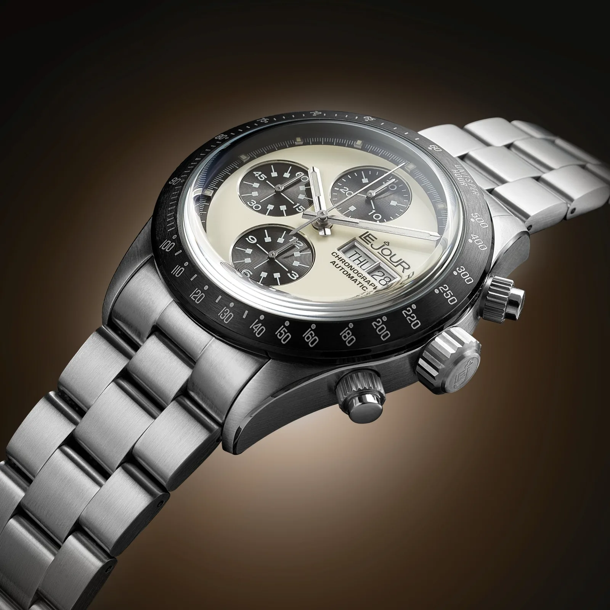
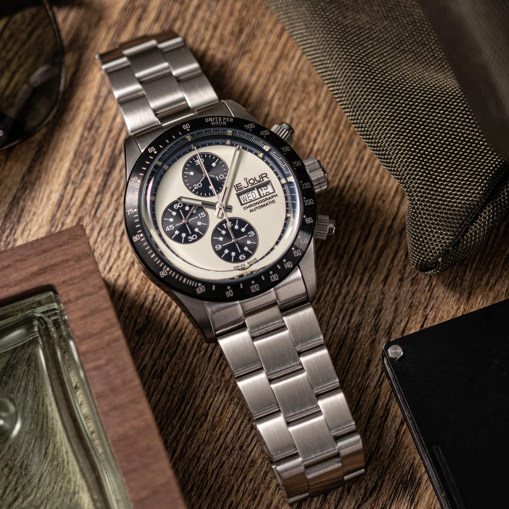

Room II · Colour
Corsa Master, Panda
316L stainless steel · 42 mm · 17 mm high
Sellita SW500 automatic chronograph
Domed sapphire · 200 m
LJ-CM-001 · USD 2,250
The Corsa Master is our racing chronograph, in the manner of the ones Le Jour sold around 1980. It has a fixed tachymeter bezel and three counters, with day and date at three.
Seven dials
Duties and VAT included · FedEx, tracked
Description
You start it at one kilometre post and stop it at the next. The bezel tells you the speed. That is all a tachymeter does, and it is still a pleasure. The Corsa Master is 42 mm across, 17 mm high and 51 mm from lug to lug, on a steel bracelet with 22 mm lugs. Inside is the Sellita SW500 automatic chronograph. The crystal is domed sapphire, and the case is water-resistant to 200 m. Choose from seven dials, among them the Panda and the Reverse Panda. Each is USD 2,250.
Specifications
- Case
- 316L stainless steel
- Diameter
- 42 mm
- Height
- 17 mm
- Lug to lug
- 51 mm
- Lug width
- 22 mm
- Crystal
- Domed sapphire, anti-reflective treatment
- Luminous
- Super-LumiNova
- Movement
- Sellita SW500, automatic chronograph
- Functions
- Hours, minutes, small seconds, chronograph, day, date
- Water resistance
- 200 m (20 bar)
- Bracelet
- 316L stainless steel
Size and fit
17 mm is tall. The domed crystal and the chronograph movement stack up, and the watch stands proud of a shirt cuff. It suits a wrist that likes to feel its watch.
As a guide, 51 mm lug to lug sits best on wrists of about 17 cm and up. On a smaller wrist, look at the RMC. It is 48 mm lug to lug and 14.5 mm high.
Delivery and duties
Duties and VAT are paid at checkout, so nothing is due at your door. FedEx carries every watch, tracked from dispatch to delivery.
Service
Inside is the Sellita SW500, a self-winding chronograph movement. It is widely used, so a watchmaker who services mechanical chronographs will know it.
The object
Seven dials, one case.
Sunday, first light, a road with nobody on it yet. You press the top pusher at the last house of the village and feel it click.



Same case
The other six


Duties and VAT included
Paid at checkout. What you see is what you pay.
Tracked by FedEx
From our hands to your door, followed all the way.
Sellita inside
Movements every good watchmaker knows.
10% on your first order
When you join the letter from Le Jour.